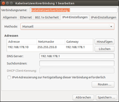
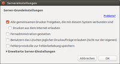
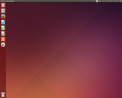
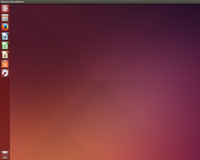
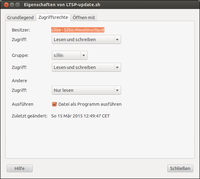

LTSP-PNP mit Fat Clients
Dieser Artikel wurde für die folgenden Ubuntu-Versionen getestet:
Ubuntu 16.04 Xenial Xerus
Ubuntu 14.04 Trusty Tahr
Artikel für fortgeschrittene Anwender
Dieser Artikel erfordert mehr Erfahrung im Umgang mit Linux und ist daher nur für fortgeschrittene Benutzer gedacht.
Zum Verständnis dieses Artikels sind folgende Seiten hilfreich:
 Dieser Artikel dient als Ergänzung zum Hauptartikel LTSP. Die Einrichtung und Pflege eines LTSP-Servers kann sehr komplex und fehlerträchtig sein. LTSP-PNP erstellt einen "schlüsselfertigen" (plug-and-play) LTSP-Server, der ein komplettes Systemimage an die angeschlossenen LTSP-Clients ausliefert. Das Vorgehen ist bereits in der englischsprachigen Ubuntu-Community
Dieser Artikel dient als Ergänzung zum Hauptartikel LTSP. Die Einrichtung und Pflege eines LTSP-Servers kann sehr komplex und fehlerträchtig sein. LTSP-PNP erstellt einen "schlüsselfertigen" (plug-and-play) LTSP-Server, der ein komplettes Systemimage an die angeschlossenen LTSP-Clients ausliefert. Das Vorgehen ist bereits in der englischsprachigen Ubuntu-Community  beschrieben und wird in diesem Artikel noch um sinnvolle Schritte ergänzt.
beschrieben und wird in diesem Artikel noch um sinnvolle Schritte ergänzt.
Im Gegensatz zur klassischen LTSP-Umgebung arbeiten die angeschlossenen LTSP-Clients als Fat Clients , das heißt, die Desktop-Umgebung und alle Programme werden wie bei einem typischen Desktop-Rechner lokal auf dem LTSP-Client ausgeführt. Somit erhält man sich die Vorteile einer klassischen LTSP-Umgebung (Updates, Benutzer und Homeverzeichnisse werden zentral verwaltet), ohne sich die Nachteile derselben einzuhandeln (Performanceprobleme bei vielen gleichzeitig auf den LTSP-Server zugreifenden Benutzern oder bei grafiklastigen Programmen/Multimedia). Somit ist es auch möglich, auf den LTSP-Clients mit der Desktop-Oberfläche Unity zu arbeiten, was in einer klassischen LTSP-Umgebung mit Thin-Clients seit dem Wegfall von Unity-2D nur noch wenig Freude bereitet. Allerdings sollte der LTSP-Client dann auch die übliche Rechenleistung und die Arbeitsspeichergröße eines typischen Desktop-Rechners besitzen.
Die Nutzung von Fat Clients ist zudem zukunftsfähig: Mit dem geplanten Ersatz des X-Servers durch Wayland bzw. Mir ist die weitere Zukunft der Thin-Clients allgemein ungewiss, da diese die Client-Server-Architektur des X-Servers nutzen. Dies ist bei Fat Clients nicht der Fall.
LTSP-PNP kann aber noch mehr: Es benutzt kein chroot, sondern generiert das auszuliefernde Systemimage direkt aus der Systemumgebung des LTSP-Servers. Das hat den Vorteil, das beim ersten Erstellen des Systemimages nicht alle Installationspakete nochmal heruntergeladen werden müssen. Zudem werden alle Updates und Programme, die auf dem LTSP-Server bequem über die grafische Benutzeroberfläche eingespielt wurden, beim nächsten Update des Systemimages automatisch an die LTSP-Clients ausgeliefert. Dies wird allerdings mit den Nachteilen erkauft, dass häufiger ein Update des Systemimages durchgeführt werden muss und dass die Systemarchitekturen von LTSP-Server und Clients übereinstimmen müssen.
Viele Autoren, die zum Thema LTSP schreiben, raten immer wieder zur 32-Bit-Architektur. Davon wird auch in diesem Wikiartikel ausgegangen. Grundsätzlich dürfte die Installation von LTSP-PNP auch unter einer 64-Bit-Architektur funktionieren, sofern die Fat Clients mit 64-Bit-Software umgehen können.
Bei der folgenden Installationsanleitung wird – wie im Artikel LTSP im Heimnetzwerk – von einer typischen Netzwerktopologie ausgegangen, bei der die Clients nicht hinter dem LTSP-Server, sondern direkt am Router hängen und der LTSP-Server als Proxy-DHCP-Server das Systemimage an die LTSP-Clients ausliefert.
Vorbereitung¶
|  |
| Beispiel: Feste IP-Adresse im NetworkManager mit FritzBox als Router |
|  |
| Druckerfreigabe im Netzwerk |
Auf dem LTSP-Server wird ein 32-Bit-Ubuntu von der Desktop-DVD bzw. vom USB-Stick installiert.
Danach sollten alle notwendigen und gewünschten Systemupdates, Anpassungen und Programme installiert werden.
Sinnvoll ist noch die Vergabe einer festen IP-Adresse für den LTSP-Server, z.B. über den NetworkManager.
Weiterhin ist es sinnvoll, noch ein oder mehrere Standard-Nutzerkonten anzulegen, mit denen dann auf den LTSP-Clients gearbeitet werden soll.
Man kann sich einiges an Ärger ersparen, wenn man die Drucker, die beim Einsatz von Fat Clients zentral auf dem LTSP-PNP-Server verwaltet werden, schon jetzt auf dem Server einrichtet und im Desktop-Panel unter "Server -> Einstellungen..." für das Netzwerk freigibt.
Installation¶
Die nötigen Pakete können direkt aus den offiziellen Paketquellen installiert werden [1]. Dabei sollten alle empfohlenen Pakete – wie üblicherweise voreingestellt – mit installiert werden.
dnsmasq (universe)
ltsp-server
ltsp-client
ldm-ubuntu-theme
 mit apturl
mit apturl
Paketliste zum Kopieren:
sudo apt-get install dnsmasq ltsp-server ltsp-client ldm-ubuntu-theme
sudo aptitude install dnsmasq ltsp-server ltsp-client ldm-ubuntu-theme
Einrichtung¶
Die folgenden Befehle müssen alle mit Root-Rechten ausgeführt werden. Daher ist es sinnvoll, sich in einem Terminalfenster [2] vorübergehend Root-Rechte [3] zu verschaffen, um nicht jeden Befehl ein sudo voranstellen zu müssen.
sudo su
dnsmasq als Proxy-DHCP-Server einrichten¶
LTSP-PNP bietet die bequeme automatische Einrichtung von dnsmasq mit folgendem Befehl an:
ltsp-config dnsmasq
In Ubuntu 14.04 und höher muss dnsmasq allerdings auch als DNS fungieren, sonst können weder der Server noch die Clients auf eine DNS-Auflösung zurückgreifen. Hierzu wird mit dem folgenden Befehl in der gerade erzeugten Konfigurationsdatei die Zeile port=0 mit einem Kommentarzeichen versehen:
sed -i 's/^port=0/#port=0/g' /etc/dnsmasq.d/ltsp-server-dnsmasq.conf
Direkt danach muss dnsmasq neu gestartet werden:
service dnsmasq restart
Konfiguration des LTSP-Boot-Kernels einrichten¶
Damit die LTSP-Clients das Systemimage vom Proxy-DHCP-Server akzeptieren, wird in der Konfigurationsdatei /etc/ltsp/update-kernels.conf mit dem folgenden Befehl die Option IPAPPEND=3 aktiviert:
sed -i 's/^#IPAPPEND=3/IPAPPEND=3/g' /etc/ltsp/update-kernels.conf
Danach sollte gleich ein LTSP-Kernelupdate durchgeführt werden:
/usr/share/ltsp/update-kernels
Erstellen des Systemimages¶
Dieser Vorgang nimmt je nach Prozessorleistung des Servers mehrere Minuten in Anspruch:
ltsp-update-image --cleanup /
Neustart des NBD-Servers¶
Um Konflikte zu vermeiden, sollte der NBD-Server neu gestartet werden:
service nbd-server restart
Jetzt können die Root-Rechte im Terminalfenster wieder abgegeben werden:
exit
Danach sollte in einem ersten Testlauf ein LTSP-Client erfolgreich aus dem Netzwerk booten können.
Problembehebung¶
Achtung!
Die folgenden Vorschläge zur Problembehebung greifen teilweise tief in das Betriebssystem ein. Man sollte genau wissen, was man tut, sonst kann es zu Fehlfunktionen bis zum Ausfall des Systems kommen. Für alle, die keine ausreichenden Kenntnisse zur Durchführung der folgenden Schritte besitzen, wird auf den Abschnitt Bash-Skripte verwiesen.
Desktop-Panel startet nicht¶
|  |
| ...nach Start des unity-panel-service sieht das schon viel besser aus. |
|  |
| Ohne funktionsfähiges Desktop-Panel ist der Nutzwert doch recht eingeschränkt... |
Beim ersten Testlauf stellt man fest, dass die Indikatoren im Desktop-Panel fehlen. Auf den Fat Clients wird der gnome-settings-daemon vor dem unity-settings-daemon geladen, sodass der unity-panel-service erst gar nicht startet (siehe Ubuntu Bugbtracker) . Eine Lösung ist, den unity-panel-service nach jedem Neustart über ein Terminalfenster [2] von Hand zu starten:
/usr/lib/unity/unity-panel-service
Viel eleganter ist es jedoch, vor dem nächsten Update des LTSP-Systemimages eine .desktop-Datei in das Verzeichnis /etc/xdg/autostart mit dem folgenden Inhalt zu legen:
1 2 3 4 | [Desktop Entry] Type=Application Name=Unity Panel Service Exec=/usr/lib/unity/unity-panel-service |
Allerdings muss diese .desktop-Datei nach dem Update des LTSP-Systemimages wieder aus dem Verzeichnis /etc/xdg/autostart entfernt werden, weil es sonst zu Konflikten beim Neustart des LTSP-Servers kommt.
Fat Clients haben keine Netzwerk-Verbindung¶
Eine Eigenheit von LTSP-PNP ist, dass es auch Dienste mit auf den Clients installiert, die dort eigentlich nichts verloren haben. So werden auf den Clients auch dnsmasq und der NBD-Server aktiviert, was dazu führt, dass die Verbindung ins Netzwerk gestört ist.
Um die entsprechenden Dienste auf den Clients zu deaktivieren, muss in der Konfigurationsdatei /var/lib/tftpboot/ltsp/i386/lts.conf im Abschnitt [Default] folgende Zeile eingefügt werden:
1 2 3 | [Default] ... RM_SYSTEM_SERVICES="dnsmasq nbd-server" |
Bildschirm lässt sich auf den Fat Clients nicht sperren¶
Beim Versuch, z.B. mit Strg + Alt + L den Bildschirm zu sperren, stellt sich schnell heraus, dass der Bildschirm zwar schwarz wird. Aktiviert man den Bildschirm jedoch wieder, findet keine Abfrage des Passworts statt. Das mag in bestimmten Fällen, z.B. in einem Heimnetzwerk, nicht weiter tragisch sein. In einer Geschäftsumgebung ist das jedoch nicht akzeptabel.
Die Eingabe des Terminal-Befehls [2]
gsettings set org.gnome.desktop.lockdown disable-lock-screen false
aktiviert zwar die Passwort-Abfrage, sobald der Bildschirm aktiviert wird. Dann landet man jedoch in einer Endlosschleife, weil das System auf dem Client das eingegebene Passwort nicht mit einem Hash in der Datei /etc/shadows abgleichen kann. Bei der Anmeldung zu Beginn einer Sitzung wird der Benutzer am Server über SSH authentifiziert und nicht – wie üblich – über PAM. Aus Sicherheitsgründen überträgt der LTSP-Server daher nicht die Einträge zu den Benutzerkonten in den Dateien /etc/passwd und /etc/shadows.
In den neueren Versionen der Pakete ltsp (5.5.2 und höher) und ldm (2.2.14 und höher) findet sich ein Lösungsansatz, bei dem der Passwort-Hash bei der Anmeldung abgegriffen und in die Datei /etc/shadows auf dem LTSP-Client eingetragen wird.
Achtung!
Der Einbau dieser Funktion in das LTSP-System unter Ubuntu sollte als experimentell angesehen werden. Auch wenn die Funktion scheinbar stabil läuft, kann eine Instabilität des Systems bis hin zu Systemabstürzen nicht ausgeschlossen werden!
Da die neueren Versionen dieser Pakete in den Ubuntu-Quellen nicht angeboten werden, lädt man sich die entsprechenden Pakete aus den Debian-Quellen herunter.
Hinweis!
Fremdpakete können das System gefährden.
Die beiden Pakete ltsp-client-core und ldm sind für den Einbau der Funktion ausreichend:

Vor der Installation muss jedoch die Konfigurationsdatei /etc/ltsp/update-kernels.conf gesichert werden, da sie bei der Installation überschrieben wird und das nächste Update des LTSP-Kernels den LTSP-Server funktionsunfähig macht:
sudo cp /etc/ltsp/update-kernels.conf /etc/ltsp/update-kernels.bak
Jetzt können die beiden Pakete installiert werden:
sudo dpkg -i ltsp-client-core_5.5.4-4_i386.deb ldm_2.2.15-2_i386.deb
Eine evtl. auftretende Rückfrage zum Überschreiben der Konfigurationsdatei /etc/ltsp/update-kernels.conf kann ignoriert werden, denn jetzt wird die gesicherte Datei zurückgeschrieben:
sudo mv /etc/ltsp/update-kernels.bak /etc/ltsp/update-kernels.conf
Danach wird das Sperren des Bildschirms auf den LTSP-Clients dauerhaft aktiviert, indem die Konfigurationsdatei /usr/share/ltsp/init-ltsp.d/50-gsettings-overrides entsprechend modifiziert wird:
sudo sed -i 's/^disable-lock-screen=true/#disable-lock-screen=true/g' /usr/share/ltsp/init-ltsp.d/50-gsettings-overrides
Wichtig ist noch der folgende Eintrag in der Konfigurationsdatei /var/lib/tftpboot/ltsp/i386/lts.conf im Abschnitt [Default], damit der Passwort-Hash beim Login auch tatsächlich abgegriffen wird:
1 2 3 | [Default] ... LDM_PASSWORD_HASH=True |
Zum Abschluss muss noch ein Update des LTSP-Systemimages durchgeführt werden.
Hinweis:
Je nach Systemarchitektur kann es passieren, dass unter einem Standard-Nutzerkonto bei der ersten Eingabe des Passworts in den gesperrten Bildschirm dieser eine "Bedenkzeit" von bis zu drei Minuten braucht. Bei den nachfolgenden Passwort-Eingaben tritt dieses Verhalten jedoch auch nach einem Neustart nicht mehr auf.
LibreOffice findet keine Drucker¶
Sobald man auf dem LTSP-Server die dort angelegten Drucker für das Netzwerk freigibt (siehe 5. unter "Vorbereitung"), werden diese für die Programme auf den Clients auch sichtbar. Lediglich LibreOffice benimmt sich diesbezüglich etwas eigenwillig und zeigt im Druckerauswahldialog ggf. nur einen "Generic Printer" an. Nach einem Update des LTSP-Systemimages hat sich dieses Problem jedoch meist von selbst gelöst. Ein Hinweis, dass LibreOffice die Drucker ebenfalls erkennt, liefert die Spalte "Standort" im Druckerauswahldialog eines beliebigen anderen Programms. Wenn dort nicht der ursprünglich auf dem LTSP-Server angegebene Standort, sondern der Name des LTSP-Servers selbst erscheint, wird auch LibreOffice die Drucker erkennen.
| Angepasste Anmeldung |
 |
| Standard-Anmeldung |
Optik¶
Hintergrund des Login-Bildschirms ändern¶
Wenn der Hintergrund des Standard-Login-Bildschirms aus dem Ubuntu-Theme des ldm-Servers nicht gefällt, kann dieser über die folgende Befehlszeile im Terminal [2] durch den Ubuntu-Standardhintergrund ausgetauscht werden:
sudo cp /usr/share/backgrounds/warty-final-ubuntu.png /usr/share/ldm/themes/ubuntu/bg.png
Damit die Änderung wirksam wird, muss danach ein Update des LTSP-Systemimages durchgeführt werden.
Update des LTSP-Systemimages¶
Während in einer klassischen LTSP-Umgebung mit Thin-Clients das Systemimage nur gelegentlich aktualisiert werden muss, ist die Pflege des Systemimages für Fat Clients deutlich arbeitsintensiver. Nach jedem Systemupdate und nach jeder Programminstallation sollte ein Update des Systemimages durchgeführt werden. Das kann unter Umständen mehrmals wöchentlich sein. Diese Prozedur ist sehr fehlerträchtig: Hält man sich nicht an die richtige Reihenfolge oder vergisst einen Arbeitsschritt, kann das den LTSP-Server unbrauchbar machen. Daher sollen in diesem Abschnitt die jeweiligen Schritte erläutert werden.
Achtung!
Vor dem Update des LTSP-Systemimages sollte unbedingt sichergestellt werden, dass alle Fat Clients ausgeschaltet sind! Der Versuch eines Systemzugriffs während des Updates kann schwerwiegende Folgen haben. Das Update sollte daher zu einem Zeitpunkt erfolgen, zu dem ein Systemzugriff über einen Fat Client unwahrscheinlich ist.
Das Update des Systemimages umfasst im wesentlichen die letzten Schritte der Installation. Wenn man den Workaround zum Start des Desktop-Panels wie oben beschrieben anwendet, muss zuerst die dort angesprochene .desktop-Datei im Ordner /etc/xdg/autostart angelegt werden.
Update des LTSP-Boot-Kernels¶
Zunächst sollte ein LTSP-Kernelupdate durchgeführt werden:
sudo /usr/share/ltsp/update-kernels
Update des Systemimages¶
Dieser Vorgang nimmt je nach Prozessorleistung des Servers mehrere Minuten in Anspruch:
sudo ltsp-update-image --cleanup /
Neustart des NBD-Servers¶
Um Konflikte zu vermeiden, sollte der NBD-Server neu gestartet werden:
service nbd-server restart
Zum Abschluss muss die ggf. anfangs erstellte .desktop-Datei nach dem Update des LTSP-Systemimages wieder aus dem Verzeichnis /etc/xdg/autostart entfernt werden, weil es sonst zu Konflikten beim Neustart des LTSP-Servers kommt.
Bash-Skripte¶
|  |
| Ausführung einer Datei als Programm zulassen |
Die folgenden Bash-Skripte sollen unerfahrenen Benutzern die Einrichtung und Pflege eines LTSP-Servers erleichtern. Hierzu sind diese Skripte mit einem Editor jeweils in ein neues leeres Dokument zu kopieren und im Homeverzeichnis des Systemverwalters z.B. unter LTSP-install.sh bzw. 'LTSP-update.sh zu speichern. Anschließend klickt man mit der rechten Maustaste  auf die jeweils erstellten Dateien im /home-Verzeichnis des Systemverwalters und lässt unter "Eigenschaften -> Zugriffsrechte" die Ausführung der Datei als Programm zu. Jetzt lassen sich die Bash-Skripte bequem im Terminal [2] mit folgenden Befehlen ausführen:
auf die jeweils erstellten Dateien im /home-Verzeichnis des Systemverwalters und lässt unter "Eigenschaften -> Zugriffsrechte" die Ausführung der Datei als Programm zu. Jetzt lassen sich die Bash-Skripte bequem im Terminal [2] mit folgenden Befehlen ausführen:
sudo su ./LTSP-install.sh exit
bzw.
sudo su ./LTSP-update.sh exit
Skript zur vollständigen LTSP-PNP-Installation¶
Dieses Bash-Skript installiert eine komplett funktionsfähige LTSP-PNP-Umgebung "out-of-the-box" mit allen Modifikationen, die in diesem Artikel beschrieben sind.
1 2 3 4 5 6 7 8 9 10 11 12 13 14 15 16 17 18 19 20 21 22 23 24 25 26 27 28 29 30 31 32 33 34 35 36 37 38 39 40 41 42 43 44 45 46 47 48 49 50 51 52 53 54 55 56 57 58 | #!/bin/bash # Skript muss in einer root-shell ausgeführt werden, indem man vorher sudo su ausführt # Installieren der LTSP-PNP-Umgebung apt-get install dnsmasq ltsp-server ltsp-client ldm-ubuntu-theme # dnsmasq wird als Proxy-DHCP-Server konfiguriert ltsp-config dnsmasq # In Ubuntu 14.04 und höher muss dnsmasq auch als DNS fungieren sed -i 's/^port=0/#port=0/g' /etc/dnsmasq.d/ltsp-server-dnsmasq.conf # Neustart von dnsmasq service dnsmasq restart # Erzeugen eines Autostarts für den Unity Panel Service echo '[Desktop Entry] Type=Application Name=Unity Panel Service Exec=/usr/lib/unity/unity-panel-service' >> /etc/xdg/autostart/unity-panel-service.desktop # Damit der Screen Lock funktioniert, müssen ltsp-client-core und ldm aktualisiert werden # Zuvor muss die Datei update-kernels.conf gesichert werden cp /etc/ltsp/update-kernels.conf /etc/ltsp/update-kernels.bak wget http://ftp.de.debian.org/debian/pool/main/l/ltsp/ltsp-client-core_5.5.4-4_i386.deb wget http://ftp.de.debian.org/debian/pool/main/l/ldm/ldm_2.2.15-2_i386.deb dpkg -i ltsp-client-core_5.5.4-4_i386.deb ldm_2.2.15-2_i386.deb rm ltsp-client-core_5.5.4-4_i386.deb ldm_2.2.15-2_i386.deb mv /etc/ltsp/update-kernels.bak /etc/ltsp/update-kernels.conf # Modifikation, um den Screen Lock zu ermöglichen sed -i 's/^disable-lock-screen=true/#disable-lock-screen=true/g' /usr/share/ltsp/init-ltsp.d/50-gsettings-overrides # Ersetzt den Ubuntu LTSP-Loginscreen durch den Standard-Desktophintergrund cp /usr/share/backgrounds/warty-final-ubuntu.png /usr/share/ldm/themes/ubuntu/bg.png # Kernelupdate im LTSP-Verzeichnis sed -i 's/^#IPAPPEND=3/IPAPPEND=3/g' /etc/ltsp/update-kernels.conf /usr/share/ltsp/update-kernels # Generieren des Images ltsp-update-image --cleanup / # Neustart des NBD-Servers, um Konflikte zu vermeiden service nbd-server restart # Entfernen des Unity Panel Service, damit der LTSP-Server ohne Komplikationen neu starten kann rm /etc/xdg/autostart/unity-panel-service.desktop # Generieren der lts.conf echo '[Default] # Diese Services müssen auf den Clients deaktiviert werden, um Konflikte zu vermeiden RM_SYSTEM_SERVICES="dnsmasq nbd-server" # Modifikation, um den Screen Lock zu ermöglichen LDM_PASSWORD_HASH=True' >> /var/lib/tftpboot/ltsp/i386/lts.conf |
Skript zum Update des LTSP-Systemimages¶
Oft funktioniert der Netzwerk-Boot nicht mehr, nachdem ein Image-Update durchgeführt wurde. Dieses Skript übernimmt alle notwendigen Schritte für ein fehlerfreies Update des LTSP-Systemimages und sorgt dafür, dass auch das Desktop-Panel nach dem Image-Update wieder ordnungsgemäß auf den Clients startet.
1 2 3 4 5 6 7 8 9 10 11 12 13 14 15 16 17 18 19 20 21 | #!/bin/bash # Skript muss in einer root-shell ausgeführt werden, indem man vorher sudo su ausführt # Erzeugen eines Autostarts für den Unity Panel Service echo '[Desktop Entry] Type=Application Name=Unity Panel Service Exec=/usr/lib/unity/unity-panel-service' >> /etc/xdg/autostart/unity-panel-service.desktop # Kernelupdate im LTSP-Verzeichnis /usr/share/ltsp/update-kernels # Image-Update ltsp-update-image --cleanup / # Neustart des NBD-Servers, um Konflikte zu vermeiden service nbd-server restart # Entfernen des Unity Panel Service, damit der LTSP-Server ohne Komplikationen neu starten kann rm /etc/xdg/autostart/unity-panel-service.desktop |
Links¶
Intern¶
LTSP
 Übersichtsartikel
ÜbersichtsartikelLTSP im Heimnetzwerk – vorhandenen DHCP-Server nutzen
LTSP/lts.conf – Konfiguration und Steuerung der LTSP-Clients
Extern¶
UbuntuLTSP/FatClients
– nähere Beschreibung der Funktionsweise von Fat Clients in der englischsprachigen Ubuntu-CommunitiyUbuntuLTSP/ltsp-pnp
– ursprünglicher Artikel in der englischsprachigen Ubuntu-Communitiy, auf die sich dieser wiki-Artikel beziehtScreen Lock does not prompt for password
– Bug-Report im Ubuntu-Launchpad: beschreibt den Fehler, warum das Desktop-Panel auf den LTSP-Clients nicht ordnungsgemäß startet; erste Lösungsansätze zum Sperren des Bildschirms auf dem Fat Client(Ltsp-discuss) Lock Screen Options
– Problemlösung zum Sperren des Bildschirms auf dem Fat Client
- Erstellt mit Inyoka
-
 2004 – 2017 ubuntuusers.de • Einige Rechte vorbehalten
2004 – 2017 ubuntuusers.de • Einige Rechte vorbehalten
Lizenz • Kontakt • Datenschutz • Impressum • Serverstatus -
Serverhousing gespendet von